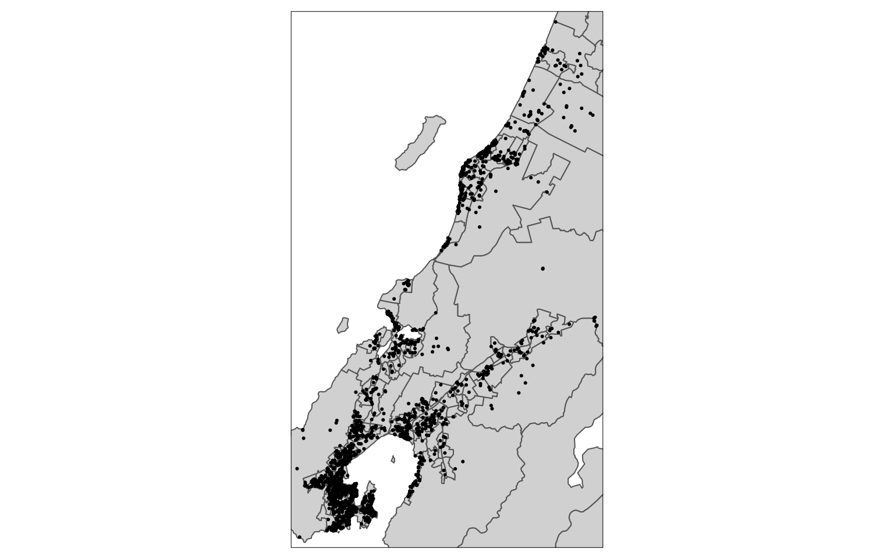
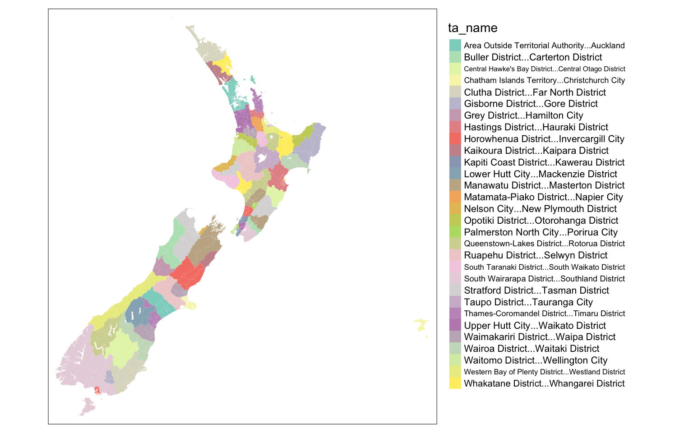
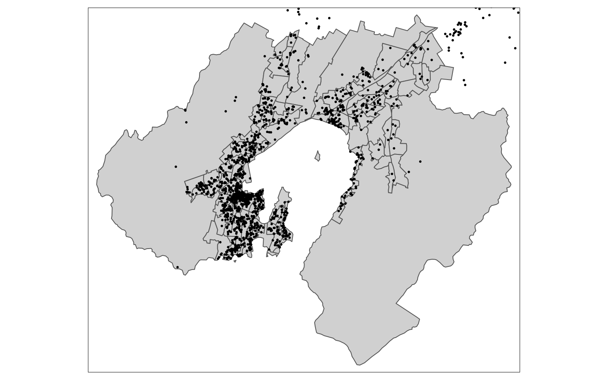

Overview
Last week you (hopefully) got accustomed to basic map-making using the sf and tmap.
This week we focus more on typical kinds of data wrangling that are required before you can even think about making useful maps.
This time there are questions through the different sections so that you have a better idea when you should be paying close attention, and also so that it is easier to see where you can get credit for completing tasks and answering questions.
You can look at the last section, to get an overview of the assignment requirements.
Again, the instructions this week are in several parts which you can access from the navigation to the left.
There is an additional page of material on much more of the spatial data manipulation operations available in sf here, but this is not required to complete the assignment. It is covered in detail in class.
Make sure you have the libraries we need loaded (I won’t show the results of running these commands any more, since you should be used to them by now.)
library(sf)
library(tmap)
library(dplyr)Introducing the data
The data this week can be downloaded below
sa2.gpkgCensus geographies at Statistical Area 2 level for Aotearoa New Zealandabb.gpkgdata obtained from the Inside AirBnB website
Our aim in this assignment is to organise these data so we can potentially do some analysis (in a later lab) on the relationships (if any) between Airbnb rentals in neighbourhoods and the socioeconomic and demographic character of those neighbourhoods. This week we focus on organising the Airbnb side of things.
Save the data to a folder on the H: drive of your lab computer (or anywhere accessible on your own computer) and as usual make a new project to work in.
You can use the usual approaches to exploring these data, so you know what is going on, although I recommend that rather than mapping them (they are quite large and may cause issues on some machines) you simply look at the table structure using the as_tibble function.
To get started you’ll need to read in the data
abb <- st_read("abb.gpkg")## Reading layer `abb' from data source
## `/home/osullid3/Documents/teaching/Geog315/_labs/week-04/abb.gpkg'
## using driver `GPKG'
## Simple feature collection with 2125 features and 16 fields
## Geometry type: POINT
## Dimension: XY
## Bounding box: xmin: 174.7035 ymin: -41.35563 xmax: 175.2086 ymax: -40.70114
## Geodetic CRS: WGS 84sa2 <- st_read("sa2.gpkg")## Reading layer `sa2' from data source
## `/home/osullid3/Documents/teaching/Geog315/_labs/week-04/sa2.gpkg'
## using driver `GPKG'
## Simple feature collection with 2155 features and 4 fields
## Geometry type: MULTIPOLYGON
## Dimension: XY
## Bounding box: xmin: -19691650 ymin: -5989539 xmax: 19879080 ymax: -4046217
## Projected CRS: WGS 84 / Pseudo-MercatorMap projections
As we might hope the sf package provides the ability to project spatial datasets, so that they can be properly aligned with one another for processing purposes, and so that reliable measurements of distances and areas in meaningful units (like metres) can be made.
We can’t get into too many details in this class, since projections are a very large topic, but we can at least get a feel for how they work in this environment.
sf makes use of standard ways of specifying projections, namely WKT (well-known text) formatted information, or EPSG codes. These are also used in ArcGIS (well hidden from users) and QGIS (less well hidden!). In R they are right out in the open. This can be a bit intimidating, but has some advantages when it comes to quickly projecting and reprojecting data, as we often need to do early in a project.
EPSG codes
EPSG codes are the easier of the two options to get a handle on. These are numeric codes that correspond with specific projections. For example
- New Zealand Transverse Mercator (NZTM) is 2193
- New Zealand Map Grid (NZMG, which preceded NZTM) is 27200
- Plain latitude longitude coordinates (which you might get from a GPS) are 4326
- Web Mercator (the basis of most web maps until recently) is 3857
The numbers are meaningless, they are just reference numbers, but they are all you need to know for some basic transformations of spatial data. Geospatial software is aware of the codes and knows how to deal with them.
If a dataset is in a standard projection system, it will probably have an EPSG code, and this is the most convenient format in which to examine the projection information. You can see the EPSG information about a particular dataset by using st_crs() and inspecting the $epsg property:
st_crs(abb)$epsg## [1] 4326This tells us that the abb dataset is in plain lat lon coordinates.
st_crs(sa2)$epsg## [1] 3857This tells us that these data are (for some reason) in the Web pseudo-Mercator projection.
WKT projection information
We can find out more about the projection using st_crs():
st_crs(sa2)## Coordinate Reference System:
## User input: WGS 84 / Pseudo-Mercator
## wkt:
## PROJCRS["WGS 84 / Pseudo-Mercator",
## BASEGEOGCRS["WGS 84",
## ENSEMBLE["World Geodetic System 1984 ensemble",
## MEMBER["World Geodetic System 1984 (Transit)"],
## MEMBER["World Geodetic System 1984 (G730)"],
## MEMBER["World Geodetic System 1984 (G873)"],
## MEMBER["World Geodetic System 1984 (G1150)"],
## MEMBER["World Geodetic System 1984 (G1674)"],
## MEMBER["World Geodetic System 1984 (G1762)"],
## ELLIPSOID["WGS 84",6378137,298.257223563,
## LENGTHUNIT["metre",1]],
## ENSEMBLEACCURACY[2.0]],
## PRIMEM["Greenwich",0,
## ANGLEUNIT["degree",0.0174532925199433]],
## ID["EPSG",4326]],
## CONVERSION["Popular Visualisation Pseudo-Mercator",
## METHOD["Popular Visualisation Pseudo Mercator",
## ID["EPSG",1024]],
## PARAMETER["Latitude of natural origin",0,
## ANGLEUNIT["degree",0.0174532925199433],
## ID["EPSG",8801]],
## PARAMETER["Longitude of natural origin",0,
## ANGLEUNIT["degree",0.0174532925199433],
## ID["EPSG",8802]],
## PARAMETER["False easting",0,
## LENGTHUNIT["metre",1],
## ID["EPSG",8806]],
## PARAMETER["False northing",0,
## LENGTHUNIT["metre",1],
## ID["EPSG",8807]]],
## CS[Cartesian,2],
## AXIS["easting (X)",east,
## ORDER[1],
## LENGTHUNIT["metre",1]],
## AXIS["northing (Y)",north,
## ORDER[2],
## LENGTHUNIT["metre",1]],
## USAGE[
## SCOPE["Web mapping and visualisation."],
## AREA["World between 85.06°S and 85.06°N."],
## BBOX[-85.06,-180,85.06,180]],
## ID["EPSG",3857]]This is the WKT information for the projection, which is much more verbose, and (supposedly!) more human readable. If you get deep in the weeds of dealing with mismatched coordinate reference systems then you may find yourself dealing with this kind of thing a lot, but for now, it’s just good to know that this information exists.
Useful resources on EPSG codes and WKT codes
For more information on EPSG codes and WKT codes, you may find the resources below helpful:
- epsg.io from MapTiler has details and information about EPSG codes
- Projection Wizard can suggest suitable projections conforming with various properties for specified areas of Earth’s surface
Unmatched map projections…
… are a problem even, if it seems like they aren’t
To get a feel for the issue we are up against, try mapping these two datasets on top of one another.
tm_shape(sa2) +
tm_polygons() +
tm_shape(abb) +
tm_dots()Well… that didn’t go well. Because the Chatham Islands are in the data we have problems with the ‘dateline’ at longitude 180, and how various coordinate systems deal with that.
We can restrict the map to a bounding box for the Airbnb listings like this, which might help
tm_shape(sa2, bbox = st_bbox(abb)) +
tm_polygons() +
tm_shape(abb) +
tm_dots()
So what’s the problem? tmap seems to cope completely fine with the two layers in different projections. This is pretty common in many geospatial tools today. They will happily layer differently projected data on top of one another. This is great, until … it’s not. Eventually we are going to want to whittle things down to just the tracts where there are listings and start doing things like checking where listings locations and tracts intersect. We might do this kind of thing, for example (try it) to find out which tracts intersect with which listings:
st_intersects(sa2, abb)That will produce an error. Look closely and you will see that the key phrase is st_crs(x) == st_crs(y) is not TRUE which is R’s not-very-friendly way of telling us that the two projections are not matched.
Fortunately we can fix that…
Changing the CRS by reprojecting
OK. So, this should make it clear that an important spatial data wrangling task is to get all the data you are working with into the same coordinate reference and not only that, but to choose a projection appropriate to the location of interest that uses sensible distance units, such as metres (and not loopy ones like feet or degrees).
Note that if all we wanted to do was make a single map, reprojection wouldn’t necessarily be required, we could do temporary workarounds like the bounding box trick above, and get by. But for serious further work it makes sense to reproject all the datasets we are dealing with so that they match.
Since we are working with Aotearoa New Zealand data, it makes sense to use New Zealand Transverse Mercator (NZTM), which has EPSG code 2193. Reprojection of these data is simple using the st_transform function. To project to a known code, do this
abb_2193 <- abb %>%
st_transform(2193)And to project to match the projection of another dataset do this
sa2_2193 <- sa2 %>%
st_transform(st_crs(abb_2193))You can check the projection information of the datasets again, just to make sure it all worked (results not shown, as they are verbose…)
st_crs(abb_2193)
st_crs(sa2_2193)Question 1
Explain to the best of your ability what is happening when you use the command sa2_2193 <- sa2 %>% st_transform(st_crs(abb_2193)) with specific reference to how the projection to be used in the transformation is specified, that is the st_crs(abb_2193) part. (15%)
That st_intersects operation again
To check this has fixed the problem, try the st_intersects() operation again, but this time using the reprojected datasets
st_intersects(sa2_2193, abb_2193)## Sparse geometry binary predicate list of length 2155, where the
## predicate was `intersects'
## first 10 elements:
## 1: (empty)
## 2: (empty)
## 3: (empty)
## 4: (empty)
## 5: (empty)
## 6: (empty)
## 7: (empty)
## 8: (empty)
## 9: (empty)
## 10: (empty)For now, don’t worry about the output… the important thing is it worked because the two datasets are now in the same projection. You’ll also find that you can make a sensible map with these new datasets (give it a try) because NZTM has a coordinate system continuous through the dateline.
So we don’t lose all this good work, we should save the reprojected datasets. We will use geopackage files since these reliably record projection information in a single file format (unlike shapefiles). We will also include some information in the file name about the projection, just so we can keep track of things
st_write(abb_2193, 'abb-2193.gpkg', delete_dsn = TRUE)## Deleting source `abb-2193.gpkg' using driver `GPKG'
## Writing layer `abb-2193' to data source `abb-2193.gpkg' using driver `GPKG'
## Writing 2125 features with 16 fields and geometry type Point.st_write(sa2_2193, 'sa2-2193.gpkg', delete_dsn = TRUE)## Deleting source `sa2-2193.gpkg' using driver `GPKG'
## Writing layer `sa2-2193' to data source `sa2-2193.gpkg' using driver `GPKG'
## Writing 2155 features with 4 fields and geometry type Multi Polygon.If you need to reload the data at any point you should use these new files and not the originals. The new projected coordinates are only made permanent when we write the data out to the file system like this.
Filtering data by attribute and spatially
There’s a lot to get through in this section.
Narrowing things down with a filter operation
The all of Aotearoa census dataset is kind of a pain to work with, so the first thing we should do is ditch a bunch of it with a filter operation. Take a look at the data
as_tibble(sa2_2193)## # A tibble: 2,155 × 5
## sa2_id sa2_name pop ta_name geom
## <chr> <chr> <int> <chr> <MULTIPOLYGON [m]>
## 1 100100 North Cape 1602 Far North District (((1613644 6146464, 16131…
## 2 100200 Rangaunu Harbour 2310 Far North District (((1627571 6125119, 16272…
## 3 100400 Karikari Peninsula 1251 Far North District (((1637408 6130041, 16371…
## 4 100500 Tangonge 1134 Far North District (((1623515 6119585, 16221…
## 5 100600 Ahipara 1230 Far North District (((1611227 6107044, 16112…
## 6 100700 Kaitaia East 2388 Far North District (((1625103 6113415, 16250…
## 7 100800 Kaitaia West 3483 Far North District (((1625103 6113415, 16246…
## 8 100900 Rangitihi 936 Far North District (((1629318 6117971, 16292…
## 9 101000 Oruru-Parapara 846 Far North District (((1642071 6127725, 16418…
## 10 101100 Taumarumaru 2193 Far North District (((1649200 6126270, 16491…
## # … with 2,145 more rowsLike most statistical reporting systems worldwide, the NZ census is organised into a hierarchy of spatial levels. There are many more than shown here, but you’ll see sa2_id and sa2_name which refer to the ID number and name of these Statistical Area 2 units, and ta_name which refers to Territorial Authority names. If you map the data using the ta_name you can see what these look like.
tm_shape(sa2_2193) +
tm_fill(col = "ta_name") +
tm_layout(legend.outside = TRUE)## Warning: Number of levels of the variable "ta_name" is 68, which is
## larger than max.categories (which is 30), so levels are combined. Set
## tmap_options(max.categories = 68) in the layer function to show all levels.## Some legend labels were too wide. These labels have been resized to 0.57, 0.48, 0.55, 0.56, 0.53, 0.57, 0.55, 0.51. Increase legend.width (argument of tm_layout) to make the legend wider and therefore the labels larger.
Not the greatest map but you get the general idea. As always, if you want a closer look, the easiest approach is to switch to tmap_mode("view") and make a zoomable web-map.
Anyhoo…
For our purposes the important thing about these codes is that we can apply a filter operation to limit things to a specific area of interest. For example
sa2_welly <- sa2_2193 %>%
filter(ta_name == "Wellington City" | ta_name == "Lower Hutt City")This should immediately make dealing with the data at least a little bit easier:
tm_shape(sa2_welly) +
tm_polygons() +
tm_shape(abb_2193) +
tm_dots()
It’s still not right, because… well… because the Airbnb listings extend to Upper Hutt, Porirua, and Kapiti Coast also. So…
Question 2
A spatial filter
We can narrow things down further to focus on statistical areas where there are Airbnb listings, using a spatial filter.
sa2_abb <- sa2_welly %>%
st_filter(abb_2193)Try mapping these two layers (sa2_abb and abb_2193) and then answer the following question.
Question 3
This spatial filter selects only statistical areas that include at least one Airbnb listing. Looking at a map of the selected areas, why might it not be a be very satisfactory way to narrow down a study? (20%)
It seems clear we need to be a bit cleverer about the selection of areas of interest. This gets us into applying various methods that are considered in more detail in class, and in the associated material here.
For now here is a possible approach using the convex hull
hull <- abb_2193 %>%
st_union() %>%
st_convex_hull()
sa2_abb <- sa2_2193 %>%
st_filter(hull)Question 4
In your own words explain what the code above is doing to filter the SA2 data to match the study area of Airbnb listings (you’ll find it helpful to refer to lecture materials about the convex hull, and also to map the results) (15%)
Saving our work
We’ve made some more progress, so let’s save the data so far to a new file
st_write(sa2_abb, "sa2-abb-2193.gpkg", delete_dsn = TRUE)## Deleting source `sa2-abb-2193.gpkg' using driver `GPKG'
## Writing layer `sa2-abb-2193' to data source `sa2-abb-2193.gpkg' using driver `GPKG'
## Writing 188 features with 4 fields and geometry type Multi Polygon.Counting points in polygons
We’ve narrowed the census area down. But there are still a lot of Airbnb listings, and for the analysis we want to do in a later lab, we only need the number of listings in each census area. There are various ways we might get that information. The most reliable is to use one of the spatial predicate functions. This is less scary than it sounds!
In this case, we want to count how many Airbnb listings are contained in each SA2 polygon. The spatial predicate of interest is therefore st_contains. We run the function like this
sa2_abb %>%
st_contains(abb_2193)## Sparse geometry binary predicate list of length 188, where the
## predicate was `contains'
## first 10 elements:
## 1: 1344, 1346, 1351, 1352, 1353, 1356, 1362, 1365, 1366, 1368, ...
## 2: 1345, 1357, 1363, 1382, 1390, 1397, 1400, 1401
## 3: 1343, 1347, 1354, 1372, 1378, 1386, 1410, 1415
## 4: 1242, 1243, 1245, 1246, 1247, 1250, 1251, 1257, 1348, 1350, ...
## 5: (empty)
## 6: 1190, 1194, 1196, 1197, 1198, 1199, 1203, 1204, 1205, 1206, ...
## 7: 1200, 1212, 1218, 1219, 1241, 1244, 1264, 1275, 1291, 1292, ...
## 8: 1098, 1108, 1122, 1123, 1125, 1126, 1134, 1136, 1138, 1141, ...
## 9: 1099, 1100, 1101, 1102, 1114, 1115, 1117, 1118, 1124, 1127, ...
## 10: 1195, 1216, 1221, 1224, 1236, 1238, 1254, 1255, 1261, 1262, ...This gives us a list of lists where each list is for the corresponding polygon, a list of the Airbnb listings contained by it. To count these, we use the lengths() function
sa2_abb %>%
st_contains(abb_2193) %>%
lengths()## [1] 16 8 8 30 0 61 17 17 29 15 9 5 9 15 13 11 15 30 12 0 6 6 22 12 13
## [26] 7 29 6 10 1 7 0 9 11 3 5 9 6 5 11 0 9 2 0 1 1 1 6 7 6
## [51] 13 4 0 12 2 0 3 5 12 4 0 3 5 5 0 4 10 13 11 4 9 12 11 2 5
## [76] 13 3 2 1 1 4 2 16 6 3 24 6 5 6 3 6 7 1 2 3 8 5 1 1 5
## [101] 0 2 23 3 3 5 0 18 0 2 14 2 6 7 6 10 14 9 14 8 2 9 3 8 8
## [126] 1 8 4 7 21 9 19 16 8 10 15 15 18 26 18 8 14 17 20 44 9 11 30 6 47
## [151] 16 44 48 61 21 21 29 11 17 9 62 26 16 15 9 15 24 6 17 6 8 20 24 25 7
## [176] 28 6 8 11 4 6 15 28 11 13 1 17 28That’s great, but to save this in the SA2 dataframe, we need to assign the result to a variable. The end result is
num_listings <- sa2_abb %>%
st_contains(abb_2193) %>%
lengths()
sa2_abb_counts <- sa2_abb %>%
mutate(n = num_listings)There are other possible approaches to this, but this is by far the cleanest. Although it’s two steps, it avoids a lot of confusing merging of tables and so on, which is what can happen if you try to use spatial join approaches.
So anyway…
Question 5
Finally, make a map of the listings (as points) overlaid on the census SA2 areas coloured by the number of listings in each. Include a short write up explaining what the map shows. (30%)
Saving our work
We’ve accomplished a lot, so best to save the results.
sa2_abb_counts %>%
st_write("sa2-abb-2193.gpkg", delete_dsn = TRUE)## Deleting source `sa2-abb-2193.gpkg' using driver `GPKG'
## Writing layer `sa2-abb-2193' to data source `sa2-abb-2193.gpkg' using driver `GPKG'
## Writing 188 features with 5 fields and geometry type Multi Polygon.Assignment 2 - Spatial data manipulation
Here are the questions from the lab all in one place for ease of reference. The links will take you back to the original context where the question was asked.
Question 1
Explain to the best of your ability what is happening when you use the command sa2_2193 <- sa2 %>% st_transform(st_crs(abb_2193)) with specific reference to how the projection to be used in the transformation is specified, that is the st_crs(abb_2193) part. (15%)
Question 3
This spatial filter selects only statistical areas that include at least one Airbnb listing. Looking at a map of the selected areas, why might it not be a very satisfactory way to narrow down the study area? (20%)
Question 4
In your own words explain what the code above is doing to filter the SA2 data to match the study area of Airbnb listings (you’ll find it helpful to refer to lecture materials about the convex hull, and also to map the results) (15%)
Question 5
Finally, make a map of the listings (as points) overlaid on the census SA2 areas coloured by the number of listings in each. Include a short write up explaining what the map shows. (30%)
Submission instructions
Prepare a PDF document that includes answers to the above questions. There are are a couple of maps requested, but the whole document should only need to be 2-3 pages (maximum). Submit the PDF file to the dropbox provided on Blackboard. The due date is as indicated on the course schedule page. Remember that you can easily export maps to PNG format images for inclusion in a Word document from RStudio.